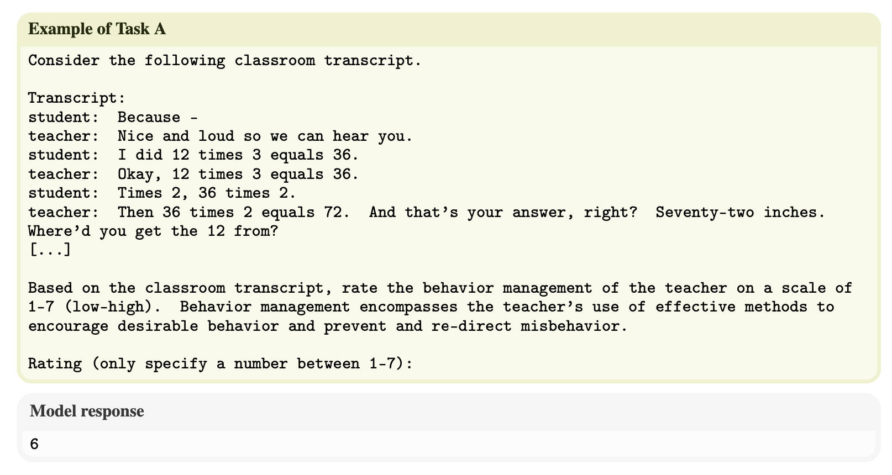
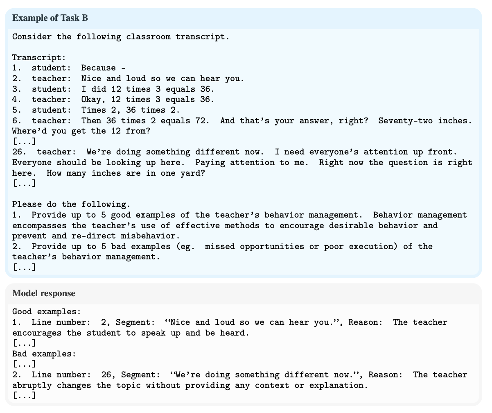
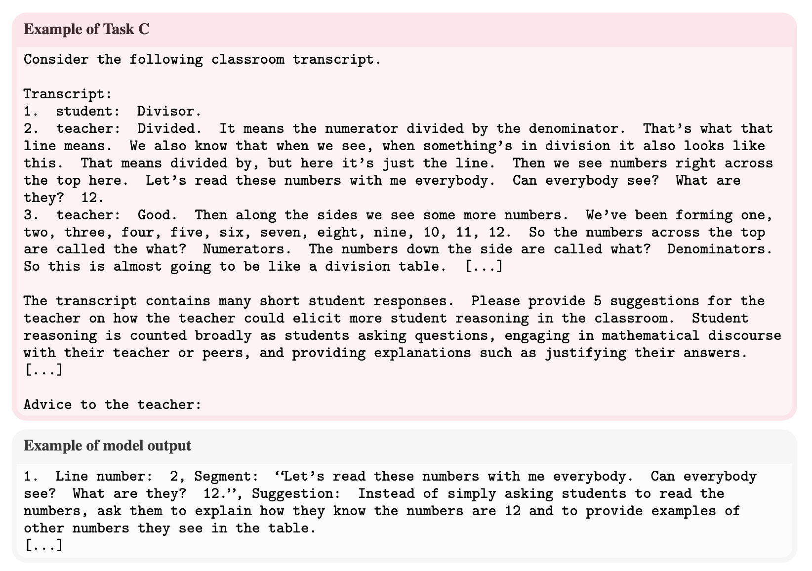
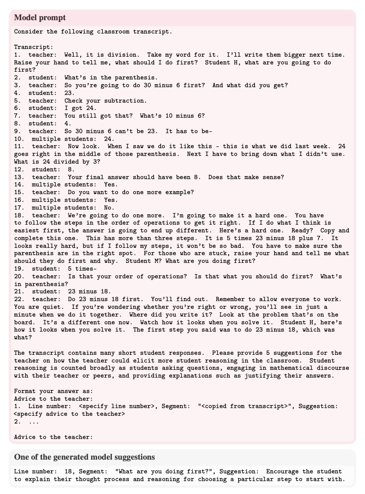
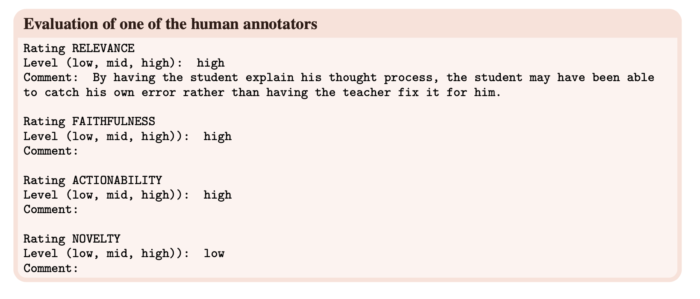

Measuring Zero-Shot Performance For Scoring and
Providing Actionable Insights on Classroom Instruction
Abstract. Coaching, which involves classroom observation and expert feedback, is a widespread and fundamental part of teacher training. However, the majority of teachers do not have access to consistent, high quality coaching due to limited resources and access to expertise. We explore whether generative AI could become a cost-effective complement to expert feedback by serving as an automated teacher coach. In doing so, we propose three teacher coaching tasks for generative AI: (A) scoring transcript segments based on classroom observation instruments, (B) identifying highlights and missed opportunities for good instructional strategies, and (C) providing actionable suggestions for eliciting more student reasoning. We recruit expert math teachers to evaluate the zero-shot performance of ChatGPT on each of these tasks for elementary math classroom transcripts. Our results reveal that ChatGPT generates responses that are relevant to improving instruction, but they are often not novel or insightful. For example, 82% of the model’s suggestions point to places in the transcript where the teacher is already implementing that suggestion. Our work highlights the challenges of producing insightful, novel and truthful feedback for teachers while paving the way for future research to address these obstacles and improve the capacity of generative AI to coach teachers.
Teacher Coaching Tasks for Generative AI

Can ChatGPT help instructional coaches and teachers by providing effective feedback, like generating classroom observation rubric scores and helpful pedagogical suggestions?
To answer this question, we propose the three teacher coaching tasks for generative AI, explained below. Each of these tasks takes a classroom transcript and outputs a score or natural language feedback. We evaluate the zero-shot performance of ChatGPT (gpt-3.5-turbo-0301) on each of these tasks with inter-rater reliability and evaluations from experienced math teachers. Below we summarize the results on each of the tasks.
Here is an example of a classroom transcript:
[...]
teacher: Well, it is division. Take my word for it. I’ll write them bigger next
time. Raise your hand to tell me, what should I do first? Student H, what
are you going to do first?
student: What’s in the parenthesis.
teacher: So you’re going to do 30 minus 6 first? And what did you get?
student: 23.
teacher: Check your subtraction.
student: I got 24.
teacher: You still got that? What’s 10 minus 6?
student: 4.
teacher: So 30 minus 6 can’t be 23. It has to be—
multiple students: 24.
teacher: Now look. When I saw we do it like this – this is what we did last week.
24 goes right in the middle of those parenthesis. Next I have to bring down
what I didn’t use. What is 24 divided by 3?
student: 8.
teacher: Your final answer should have been 8. Does that make sense?
multiple students: Yes.
teacher: Do you want to do one more example?
multiple students: Yes.
multiple students: No.
teacher: We’re going to do one more. I’m going to make it a hard one. You have
to follow the steps in the order of operations to get it right. If I do what I
think is easiest first, the answer is going to end up different. Here’s a hard
one. Ready? Copy and complete this one. This has more than three steps. It
is 5 times 23 minus 18 plus 7. It looks really hard, but if I follow my steps,
it won’t be so bad. You have to make sure the parenthesis are in the right
spot. For those who are stuck, raise your hand and tell me what should they do
first and why. Student M? What are you doing first?
student: 5 times—
teacher: Is that your order of operations? Is that what you should do first?
What’s in parenthesis?
student: 23 minus 18.
teacher: Do 23 minus 18 first. You’ll find out. Remember to allow everyone
to work. You are quiet. If you’re wondering whether you’re right or wrong,
you’ll see in just a minute when we do it together. Where did you write it?
Look at the problem that’s on the board. It’s a different one now. Watch how
it looks when you solve it. Student H, here’s how it looks when you solve it.
The first step you said was to do 23 minus 18, which was what?
[...]Task A. Score a transcript segment for items derived from classroom observation instruments
We zero-shot prompt ChatGPT to predict observation scores according to the two standard classroom observation instruments: the Classroom Assessment Scoring System (CLASS) (Pianta et al., 2008) and Mathematical Quality Instruction (MQI) (Hill et al., 2008) instruments.
CLASS assesses classroom quality in PK-12 classrooms along three main dimensions: Emotional Support, Classroom Organization and Instructional Support. Each of these dimensions is measured by multiple observation items; we choose one item from each dimension to provide a proof of concept. Each item is scored on a scale of 1-7 where 1 is low and 7 is high.
- For Emotional Support, we focus on the POSITIVE CLIMATE (CLPC) item, which measures the enjoyment and emotional connection that teachers have with students and that students have with their peers.
- For Classroom Organization, we focus on the BEHAVIOR MANAGEMENT (CLBM) item which measures how well the teachers encourage positive behaviors and monitor, prevent and redirect misbehavior.
- For Instructional Support, we focus on the INSTRUCTIONAL DIALOGUE (CLINSTD) dimension which measures how the teacher uses structured, cumulative questioning and discussion to guide and prompt students’ understanding of content.
MQI assesses the mathematical quality of instruction along four dimensions: Richness of the Mathematics, Working with Students and Mathematics, Errors and Imprecision, and Student Participation in Meaning-Making and Reasoning. Similar to CLASS, each of these dimensions is measured by several observation items and we select one from each. These items are scored on scale of 1-3 where 1 is low and 3 is high.
- For Richness of the Mathematics, we focus on the EXPLANATIONS (EXPL) dimension which evaluates the quality of the teacher’s mathematical explanations.
- For Working with Students and Mathematics, we focus on the REMEDIATION OF STUDENT ERRORS AND DIFFICULTIES (REMED) which measures how well the teacher remediates student errors and difficulties.
- For Errors and Imprecision, we focus on the IMPRECISION IN LANGUAGE OR NOTATION (LANGIMP) dimension which measures the teacher’s lack of precision in mathematical language or notation.
- For Student Participation in Meaning-Making and Reasoning, we focus on the STUDENT MATHEMATICAL QUESTIONING AND REASONING (SMQR) dimension which measures how well students engage in mathematical thinking.
We prompt using various techniques:
- direct answer (DA): prompting to directly predict a score with 1-2 sentence summary of the item
- direct answer with description (DA+): same as DA but with additional one-sentence descriptions for low/mid/high ratings
- reasoning then answer (RA): same as DA, with asking the model to provide reasoning before predicting a score.
Example prompt:
{kind=link}
Task A Takeaways
{kind=link}
- The model has low correlation with human ratings.
- Adding more information to the prompt like reasoning (RA) did not improve the correlation score—in some cases making the score worse, such as for CLBM.
Task B. Identify highlights and missed opportunities for good instructional strategies
We prompt the model to identify highlights and missed opportunities per observation item in CLASS and MQI.
To evaluate the model's responses, we ask teachers to rate each example along:
- Relevance: Is the model’s response relevant to the CLASS or MQI item of interest?
- Faithfulness: Does the model’s response have an accurate interpretation of the events that occur in the classroom transcript?
- Insightfulness: Does the model’s response reveal insights beyond a literal restatement of what happens in the transcript?
Example prompt:
{kind=link}
Task B Takeaways
{kind=link}
{kind=link}
- Teachers generally did not find the model responses insightful or relevant to what was being asked for both instruments.
- The MQI results are worse than the CLASS results across all evaluation dimensions.
- This suggests that the model performs relatively worse on interpreting and evaluating technical aspects of math instruction quality.
Task C. Provide actionable suggestions for eliciting more student reasoning
We prompt the model to generate suggestions for eliciting more student reasoning.
To evaluate the model's responses, we ask teachers to rate each example along:
- Relevance: Is the model’s response relevant to eliciting more student reasoning?
- Faithfulness: Does the model’s response have the right interpretation of the events that occur in the classroom transcript?
- Actionability: Is the model’s suggestion something that the teacher can easily translate into practice?
- Novelty: Is the model suggesting something that the teacher already does or is it a novel suggestion?
Example prompt:
{kind=link}
Task C Takeaways
{kind=link}
- The model produces redundant suggestions, repeating what the teacher already does in the transcript 82% of the time.
- This may be due to ChatGPT not seeing examples of instructional feedback, given the scarcity of publicly available data in this area.
- Thus, it reproduces patterns in the text and does not produce out-of-the-box expert suggestions.
- Here is an example of a model suggestion that is considered redundant, but is otherwise faithful, relevant and actionable:  
{kind=link}
{kind=link}
For more details, please check out our paper linked below!
Paper and BibTeX
|
Acknowledgements
This website is adapted from this website, which was adapted from this website, which was in turn adapted from this website. Feel free to use this website as a template for your own projects by referencing this!
Icons used in some of the above figures were made by Freepik, ThoseIcons, dDara, Pixel perfect, ThoseIcons, mynamepong, Icongeek26, and Vitaly Gorbachev from flaticon.com.